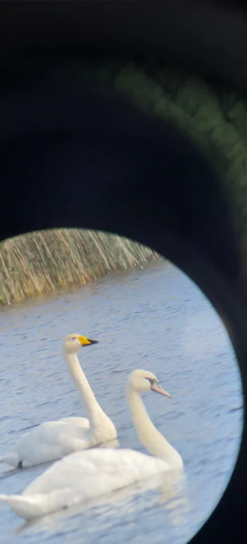

Monitoring and Research
Monitoring and research across Cornafulla Bog and the Shannon Callows bring together wildlife surveys, habitat recording and investigations into the landscape's ecology and cultural history. From waterbird counts and trail-camera observations to vegetation surveys and peat-depth measurements, the work builds a growing body of local evidence. Researchers and specialists share their methods and expertise, while Cornafulla Micro Reserve's local knowledge and landowner relationships help facilitate research and access. Additional field equipment was funded through the 2026 Peatlands and Natura Community Engagement Scheme (PNCES), administered by the National Parks and Wildlife Service.